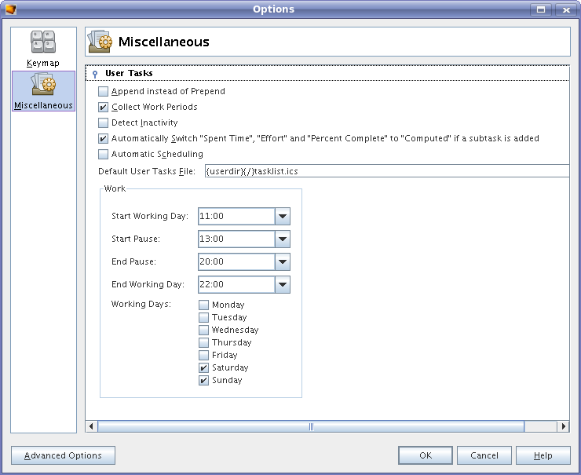

User Task List Options
To customize options related to the User Tasks view,
open the Options dialog (Tools > Options),
and then drill down to Miscellaneous> User Tasks.

The following settings are available:
- Append instead of Prepend: Instead of
prepending tasks
to the list, append them to the end. Default: False. This is handy if
you're going to type in a list of tasks in sequential order and would
like the resulting list to be in the same order as the one you typed it
in, not the reverse. This setting is also used if you paste tasks.
- Collect Work Periods: if
this option is switched on, the time periods when you work on a task
are collected and shown in the tab "Work Periods" in the "Show Task" dialog.
- Detect
Inactivity: if
this option is on, a running task will be suspended after 10 minutes
you do not use your mouse or keyboard (it works only if you work with
NetBeans all the time).
- Automatically Switch "Spent Time", "Effort" and
"Percent
Complete" to "Computed" if a subtask is added: if you create
a new
subtask the corresponding values of the parent task will be computed
automatically.
- Default User Tasks File: Name of file
where the tasks are
stored.
Default: {userdir}/tasklist.ics.
- Start Working Day/Start Pause/End Pause/End Working Day/Working Days: these settings define periods of work.
- Automatic Scheduling: automatically reschedule all undone tasks in a task list if something was changed.
Comments & requests to dev@tasklist.netbeans.org.
Further information at http://tasklist.netbeans.org.